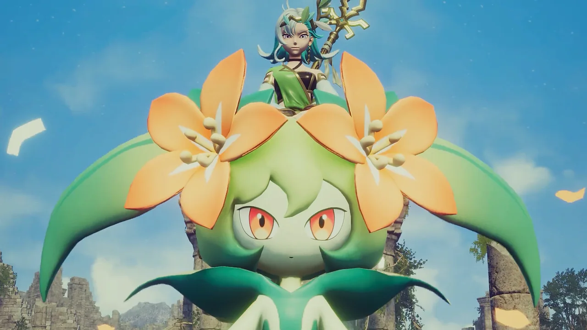
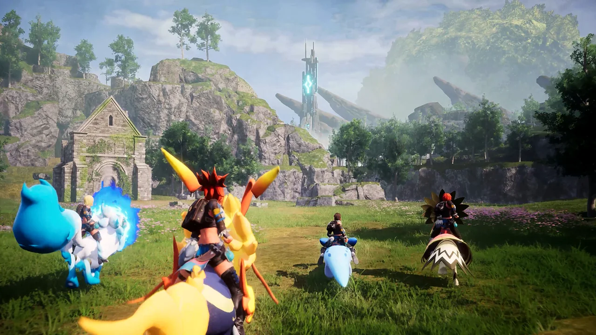
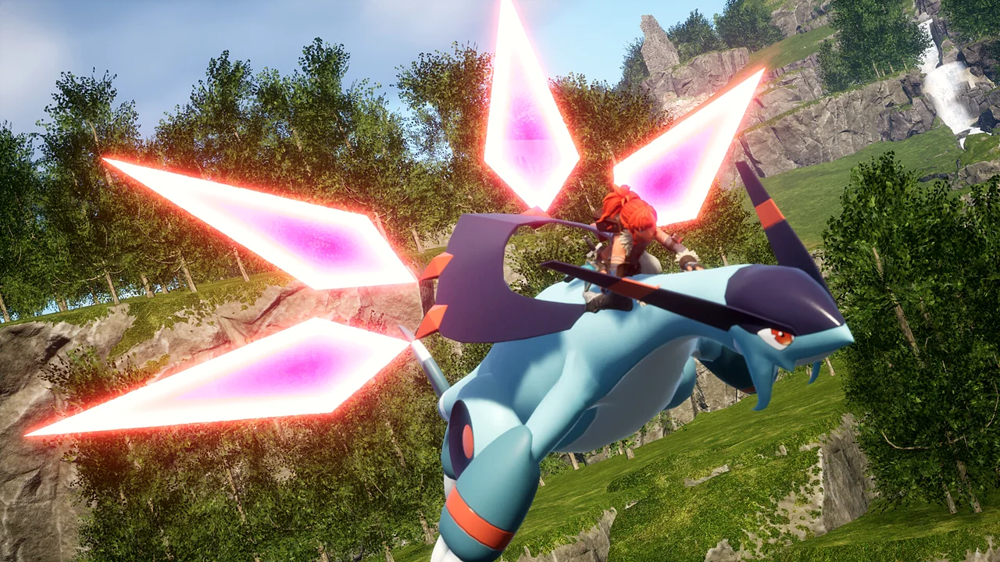
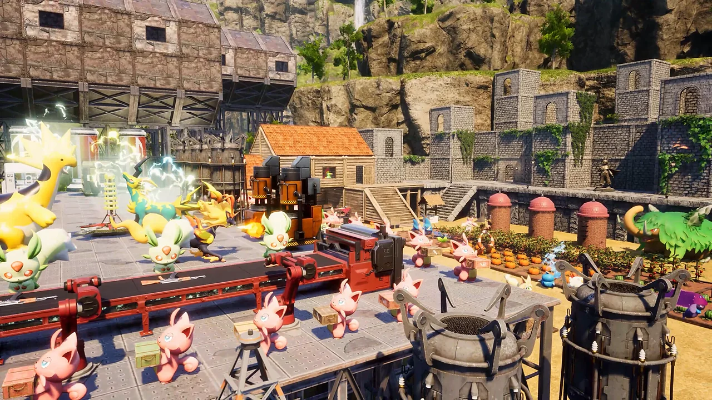
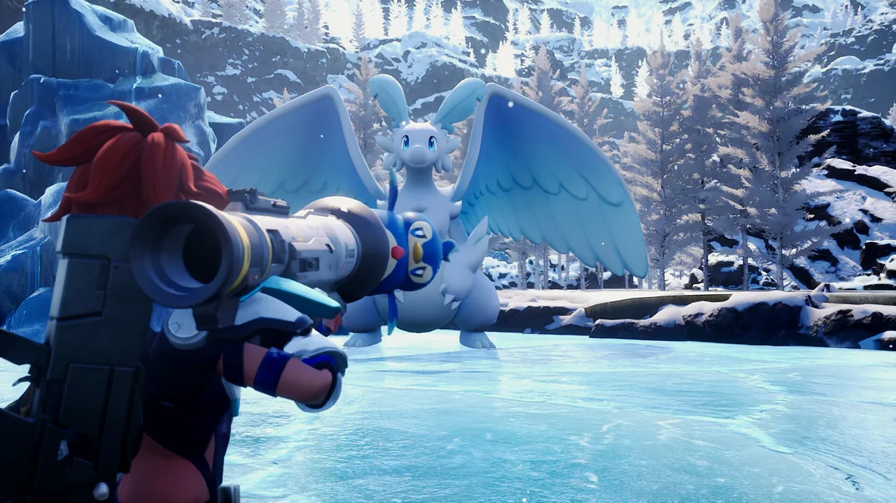
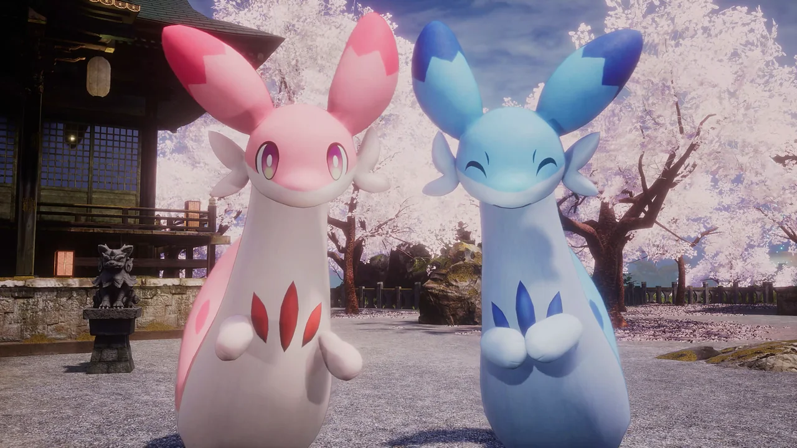
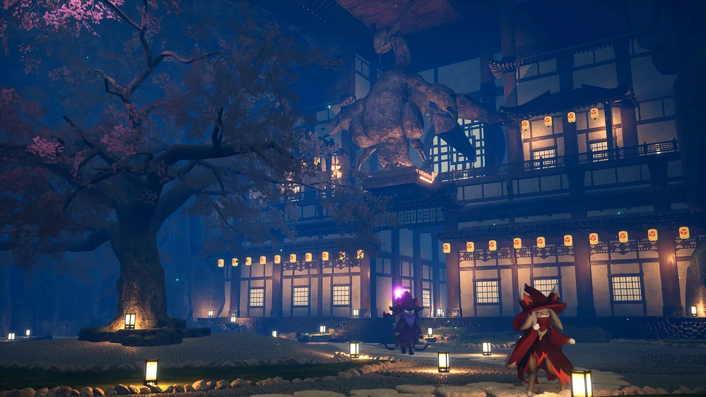
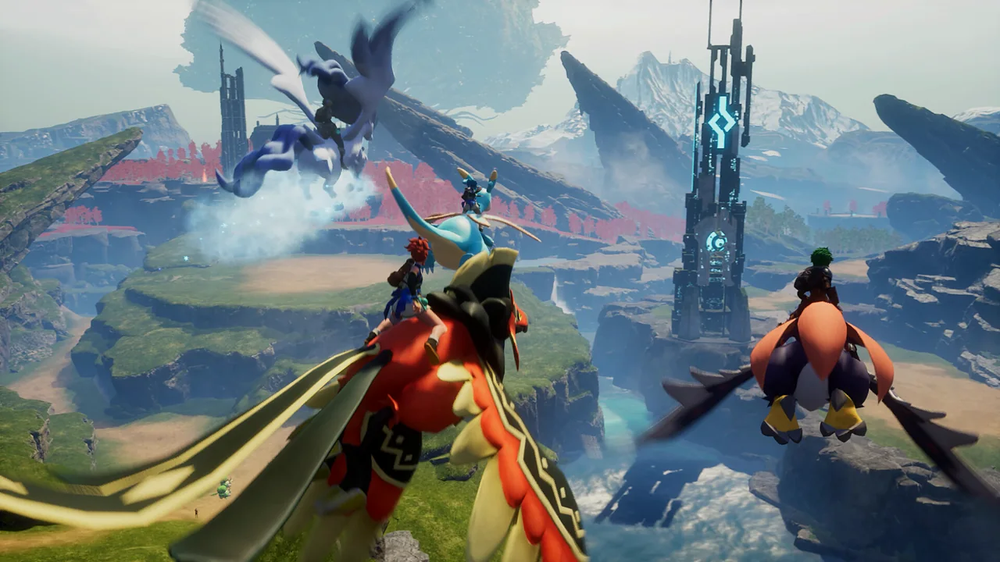

Места
Регионы Палпагоса
10 регионов, 9 подземелий, 8 башен и 149 точек быстрого перемещения. Уровни — ориентир по экспедициям и подземельям.

Регион
Мировое Древо (World Tree)

Регион
Стартовые холмы и равнины

Регион
Лес
Регион · фото скоро
Вулкан (Обсидиановая гора)

Регион
Пустыня

Регион
Снежные горы (Священная гора)

Регион
Остров Сакурадзима

Регион
Тёмный остров (Тэнраку)

Регион
Солнечный предел (Sunreach)
Регион · фото скоро